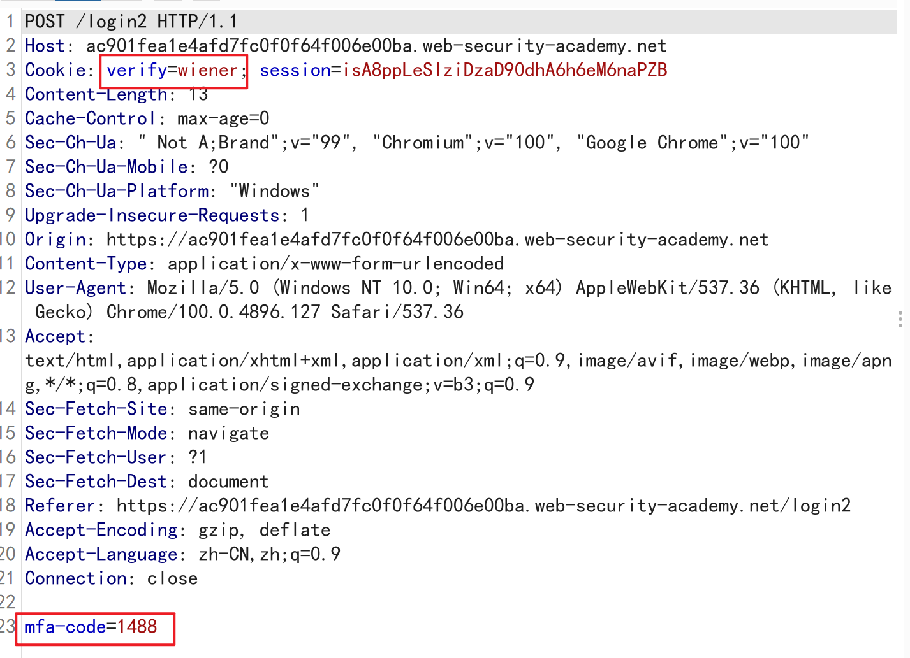

简介
业务逻辑漏洞是应用程序设计和实现中的缺陷，这使得攻击者可以利用应用程序中的一些功能实现一些恶意的目标。这些缺陷通常都是因为没有预测到会发生这样的异常应用程序状态，因此也没有相应的解决办法，无法安全地处理它们。
如何产生
业务逻辑漏洞产生的核心原因就是：设计人员在编写程序时，只对用户的常规操作进行了考虑而没有考虑到用户执行了意料之外的行为应当如何处理。
它是与应用程序/业务领域有紧密关联的。
漏洞类型
过度信任客户端控制
简单来说就是：无条件信任客户端所发送过来的数据，认为这个数据只是用户通过 web 交互而得到的，忽略了数据可能被截获、篡改的可能性。
-
Excessive trust in client-side controls
要求我们能够以比价格更少的钱购买到物品，之前一直都以为是在交付页面对物品的金额或者账户的金额进行修改结果是在添加至购物车的 POST 请求中进行物品金额的修改，直接上图了
-
该题目的要求是让我们利用已知的有效账户来登录一个只知道用户名的账户。
首先对验证码提交界面的数据包进行分析
首先我们可以发现，要进行第二步验证的用户的用户名被放在了 cookie 中，也可以初步进行推断：服务器是依靠 cookie 中的 verify 的值来确定是哪一位用户需要进行第二步验证，然后服务器就根据这个用户名发送响应的验证码到用户的邮箱中去。
然后对提交验证码的数据包进行分析

同样我们可以看出来，在该数据包中是以 cookie 中 verify 的值来确定验证码提交者的身份，然后以 post 的方式将输入的验证码的值传给服务器。
那么解题思路也就出来了，首先将 GET/login2 数据包中 verify 的值修改成目标用户，让服务器误以为目标用户要进行第二步验证
然后再对 POST/login2 的验证码处进行爆破
看到爆破回复状态为 302 时即为爆破成功。
无法处理非常规输入
开发者并未考虑到用户会输入一些不符合逻辑的内容而导致应用程序无法正确进行处理，一些过长的文本输入、一个非常大的数字、 一个不合逻辑的负数…
例如：
考虑两个银行账户之间的资金转移。此功能几乎肯定会在完成转账之前检查发件人是否有足够的资金：
2
3
4
5
6
7
8
9
10
11
>$currentBalance = $user->getBalance();
>if ($transferAmount <= $currentBalance)
>{
// Complete the transfer
>}
>else
>{
// Block the transfer: insufficient funds
>}但是，如果逻辑不能充分防止用户在参数中提供负值
amount，攻击者可能会利用这一点绕过余额检查并将资金转移到“错误”的方向。如果攻击者将 -$1000 发送到受害者的帐户，这可能会导致他们从受害者那里收到 1000 美元。逻辑将始终评估 -1000 小于当前余额并批准转移。
-
High-level logic vulnerability
在添加商品至 cart 时抓包，可以发现商品数量是可以更改的
发现 cart 也存在我们添加的 -1 件商品
但是在结算时发现
因为我们要买的物品是 Jacket 所以 Jacket 的数目要大于 1，然后利用别的负数个数的商品使金额小于账户中的余额
-
Low-level logic flaw
首先观察题目可以发现每次输入商品的最大个数为99，然后使用 bp intruder 循环发包，测试购物车最大的金额承受能力
我们可以发现当 cart 中的商品金额达到一定高的数目时会突然跳到一个很大的负数，这里可能是因为价格已超过后端编程语言中允许的整数最大值，结果该值循环回到了可能的最小值。
继续利用 bp 添加这个商品，我们会发现金额又会慢慢升回上去。这就说明购物车中的总金额是在一个极大的负数和一个极大的正数之间循环的。
利用这个 bug 我们就可以一直添加 jacket 这个商品直至购物车中的金额小于0但最接近0。
然后利用别的商品使金额大于0但是小于100，最后结算即可。
-
Inconsistent handling of exceptional input
这题用到了 bp 的 target 功能模块，利用如下功能，能够对目标域下的各个目录进行扫描
发现该域下存在着 admin 的目录
尝试访问发现如图提示
那就意味着我们需要使用 dontwannacry 的邮箱注册才可以，我们需要利用业务逻辑漏洞使发往 dontwannacry 的邮件发往我们的邮箱。
而这道题目的业务逻辑漏洞就在过长的邮箱名输入会导致服务器的响应异常，我们在注册界面利用一个非常长的邮箱名去注册成功时，我们登录所注册的账户，会发现我们的邮箱到达一定长度之后会被拦截。

我们需要利用这个拦截使我们的邮箱看上去是属于 dontwannacry 的。依据邮箱最大长度的限制构造 payload
1 | very-long-string@dontwannacry.com.YOUR-EMAIL-ID.web-security-academy.net |
登录我们注册的这个账户，我们可以发现我们是以 admin 身份注册的账户。
最后利用 admin panel 模块将目标用户清除即可。
对用户行为作出有缺陷的假设
用户作出了开发者意料之外的行为使应用程序无法按预期响应，也是逻辑漏洞的根本原因之一。
个人感觉这个类别应当是能够包含上一个无法处理非常规输入这个类别的，因为导致无法处理非常规输入的原因就是开发者对用户行为的假设有缺陷。
这些缺陷具体有如下几个方面：
- 一直信任受信任的用户
- 用户不会总是提供强制输入
- 用户不会一直按照预期的步骤执行
-
Inconsistent security controls
感觉这题有点无脑，利用邮箱注册一个账户之后进入 my account，在此处可以进行邮箱的更新，可以发现只要输入格式正确邮箱都可以更新成功。那么 payload 就很明显了
1
string@dontwannacry.com
然后点击 update email 消除目标账户即可
-
Weak isolation on dual-use endpoint
利用已知的账户进行登录，在 my account 的更改密码功能中有四个必须输入的值，分别是 ：用户名、原始密码、新密码、重复新密码。对应的更改密码的 post 请求中的如下属性
我们的目的是访问 administrator 的账户，但如果我们直接对该账户进行修改密码操作是无法成功的，因为我们不知道该账户的原始密码，而服务器会对用户名和原始密码进行校验，校验正确了之后才能修改成功。
既然我们不知道这个原始密码的值，那么我们就直接将这个必须输入的内容给删除，只给服务器传入用户名、新密码、重复新密码
密码修改成功后那就可以想干啥就干啥了~
-
Insufficient workflow validation
观察购买商品流程时 bp 中数据包
主要是框框中的这下些请求，当我们在购物车界面按下 place order 按钮时网页会向服务器发送一个 post 的请求来对我们的购物车进行校验，校验结束之后我们会收到服务器的一个 response，而这个 response 中其实就包含了校验的结果，之后网页会根据这个 response 向服务器发送 get 请求并使用户能够看见place order 的最终结果。
不同的校验结果会使服务器返回的 response 不同
网页收到不同结果的 response 后所发送的 get 请求的请求头也不同
因此，place order 的最终结果是依据网页向服务器发送的 get 请求所决定的。
那么解决方式就很明显了：
-
通过购买一个低价的商品获取到 place order 结算成功后网页发送的 get 请求，也就是
post /cart/checkout后面的那个 get 请求 -
使用 bp 截获后买 Jacket 时网页向服务器发送的 post 请求
-
利用 bp 的 repeater 向服务器发送之前我们所获取的结算成功的 get 请求
通过这3个步骤，我们就可以成功跳过 checkout 这个步骤从而直接购买商品。
-
-
Authentication bypass via flawed state machine
这题与上一题思路是类似的，利用 bp 看一下登录过程的数据包
网页发送一个 post 请求其中包含登录的信息，网页接收到服务器的 response 并会根据 response 发送一个 get 请求。如果登录信息是正确的那么浏览器就会发送上图红色框中的 get 请求。
但是这题利用的是跳过预期的步骤，这里直接放一下解题过程：
- 利用账户进行登录同时打开 bp 对请求进行拦截
- 将第一个 post 请求进行放行，丢弃掉下面的 get 请求
- 回到账户界面时可以发现我们已经是 administrator 的身份了
特定领域的缺陷
在一些特殊的场景中或者是业务领域，由于开发者不熟悉该领域的特定知识，有极大的可能存在着逻辑漏洞。
-
Flawed enforcement of business rules
首先在最开始的界面顶部我们可以看到如图信息
在购物车中随意添加商品，然后在 coupon 处添加这个优惠码之后我们可以发现金额少了 $5 ,但是重复添加是没有用的，它会告诉你

尝试过修改 NEWCUST5 后面的数字，但是也失败了。看了 wp 之后才发现原来页面的底部还有小东西，随便填个邮箱就能获得另一个优惠码。
重复添加同一个优惠码会有上图的提示，但是交替重复添加优惠码服务器是无法检测出来的。所以交替重复添加你拥有的2个优惠码即可。
-
Infinite money logic flaw
这道题目，emmmmm，个人觉得有点脑洞，而且有点难，不看 wp 我感觉我永远都做不出来。
这道题目的关键是利用这个商店中的 gift card 商品和 SIGNUP30 优惠券达到增加账户金额的目标，具体流程如下：
- 添加该物品至购物车并添加优惠券
- 结算商品并获得礼物码
- 在 my account 界面填入优惠码
经过以上操作，我们就可以发现我们的账户中多了 $3。
那么解题思路是很明显了，我们就是要反复这一套操作使我们账户的金额增加。
那么这道题目的另一个难点也来了，这里涉及到了宏的应用。
首先在添加宏的规则中选中如下请求
选中上图中高亮的请求，添加获取 gift card 的规则
在下一 post/gift-card 中应用在上一个 get 中获取的礼品码
之后再进行宏的测试，如果得到的是302回复那就是成功了。
制定好宏的规则后我们将宏添加到 session handing rules 中去就可以了。
然后我们将 get/my account 这个请求发送至 intruder 选择 null payload 进行 412 次的发送该请求就可以了。
宏的作用应该就是在每次发送这个 get/my account 请求之前，根据我们的设定向服务器发送了前面的那几个数据包，这样就相当于帮助我们完成了从添加 gift card 这个商品到获得礼品码、填入礼品码、点击 Redeem 这个按钮的操作。
最后，等金额高到一定的程度去结算就ok了。
提供加密 Oracle
-
Authentication bypass via encryption oracle
首先需要意识到两点东西：1、该网页是依靠 cookie 中的 stay-logged-in 字段来辨别登录者身份的。2、提交完 comment 后服务器所返回的 response 中的 cookie 是会用于紧接着的 get 请求中的，而这个 cookie 所传递的信息就是非法邮箱的内容。

也就是说 cookie 中的 notification 的值是 Invalid email address：xxxx 进过一系列加密得到的。
我们的目的是要让服务器认为我们是 administrator，那也就是说我们需要通过更改 stay-logged-in 的值来达到此目的，但是这个字段是通过了加密的，我们并不知道这个字段原来的值的含义是什么，所以我们接下来需要做的是：知道原本该字段的值。
我们可以发现 notification 和 stay-logged-in 字段的结构是很相似的，如果这两者的加密方式是相同的话，那我应该可以利用 get 请求对 notification 字段的回显得到我想要的信息。
利用 repeater 将 notification 字段的字段值改成 stay-logged-in 字段的字段值并发送，我们可以在回应中发现该值被解析之后的情况
应该是一个用户名加上时间戳的一个形式。
接下来我们来理一下思路：
- 我们现在已经知道了 stay-logged-in 字段的含义，并且拥有了一个有效的时间戳。
- 我们可以通过利用服务器对 post/comment 请求的回应中的 notification 字段获得加密后的值
- 我们可以通过服务器对 get 请求的回应查看解密后的 notification 的值
- 我们的目的是得到 administrator：有效时间戳 加密后的值
那么解决方案也就大致出来了
首先我们通过修改 post 请求中的 email 字段值获得 administrator：有效时间戳 字符串加密后的值 ，其中时间戳就是通过上图中有效账户获得的
因为输入无效邮箱会自带 Invalid email address：字段也就是说上图中的 notification 值中是包含了 Invalid email address：加密后的值的，这部分并不是我们所需要的，所以我们要删去。但是为了保证服务器能够接收删除后的字段，我们需要通过添加9个字符来达到删除后的字段字段数为16的倍数。
对获得加密后的值进行如下操作获得我们所需要的的加密后的 administrator：时间戳 的值
将获得的值放入 get 请求中进行测试，得到网页的回显显示为如图即为成功
然后我们利用 bp 拦截访问 home 界面的请求，删除 cookie 中的 session 字段，修改 stay-logged-in 字段，修改完毕后放行
我们就已经是以管理员的身份进入界面了。
本文作者：GhDemi
本文链接： https://ghdemi.github.io/2022/05/02/%E4%B8%9A%E5%8A%A1%E9%80%BB%E8%BE%91%E6%BC%8F%E6%B4%9E/
文章默认使用 CC BY-NC-SA 4.0 协议进行许可，使用时请注意遵守协议。